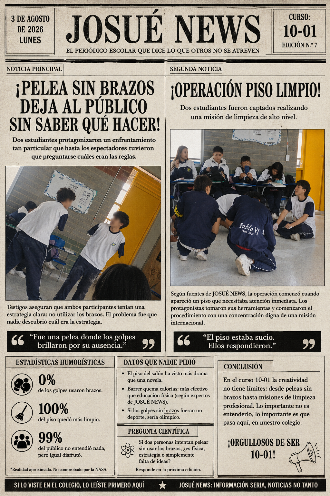
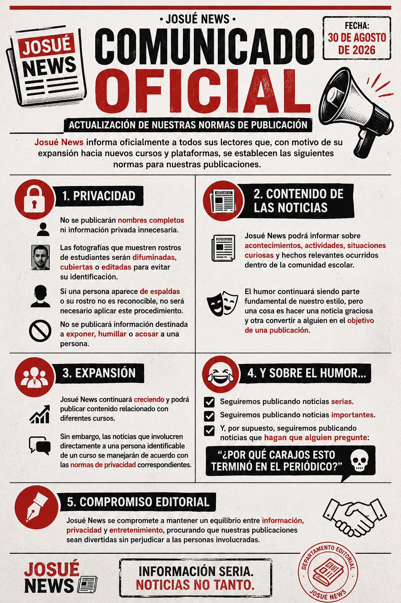

VIDA ESCOLAR
El estudiante no se pudo resistir
Con una fuerza descomunal o hasta con mucha mala suerte ataca a una puerta que estaba quieta
5 OCT 2026Información seria. Noticias no tanto.
Lo que parecía una clase de artes común terminó convirtiéndose en un inesperado episodio de La Granja de Zenón, cuando dos estudiantes llevaron la música infantil al salón y sorprendieron a sus compañeros.
5 de octubre de 2026
LEER NOTICIA →Con una fuerza descomunal o hasta con mucha mala suerte ataca a una puerta que estaba quieta
5 OCT 2026Dos estudiantes decidieron poner la regla de no utilizar manos y asi iniciaron una pelea devastadora
5 OCT 2026Estas reglas son las que se tienen presentes al hacer una noticia
4 OCT 2026Fuentes cercanas aseguran que los estudiantes lograron llegar vivos al segundo descanso.
LEER NOTICIA →

JOSUÉ NEWS es un proyecto de noticias escolares creado para informar sobre lo que ocurre dentro de nuestra comunidad.
Aquí encontrarás noticias, fotografías, situaciones cotidianas, humor y ediciones especiales.
Información seria. Noticias no tanto.